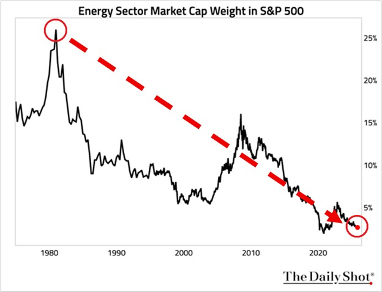
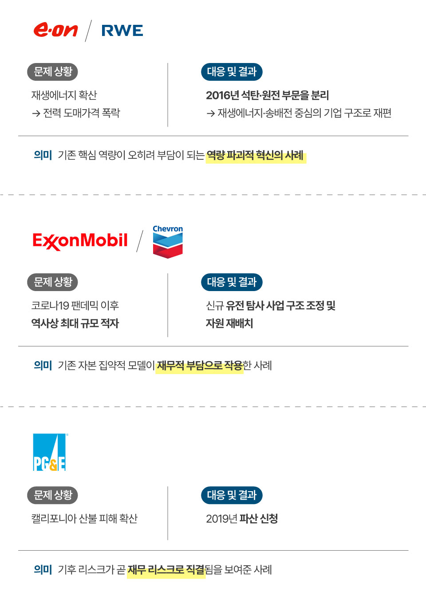
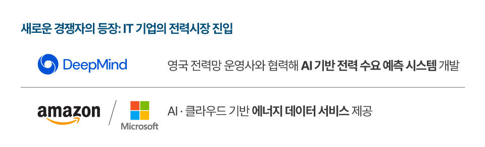
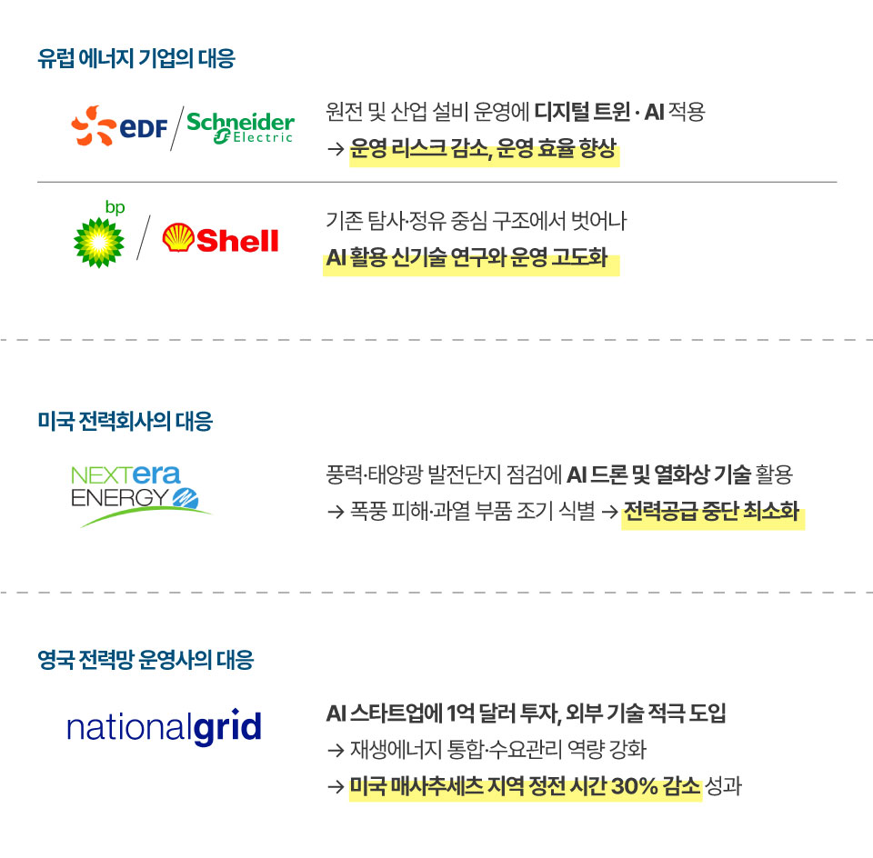
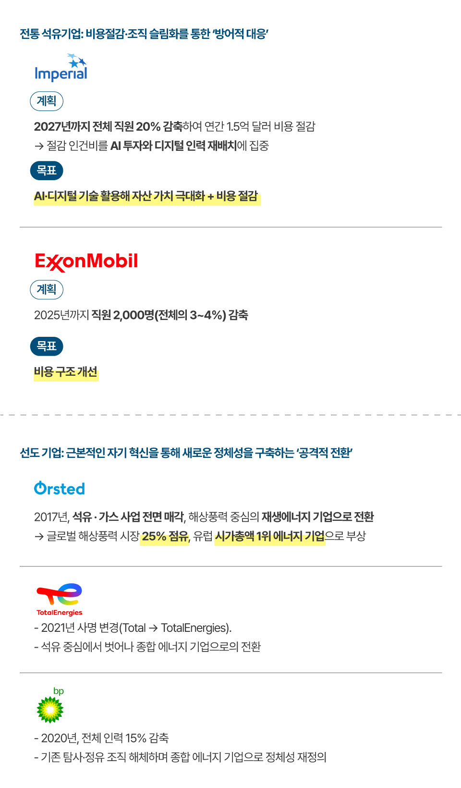
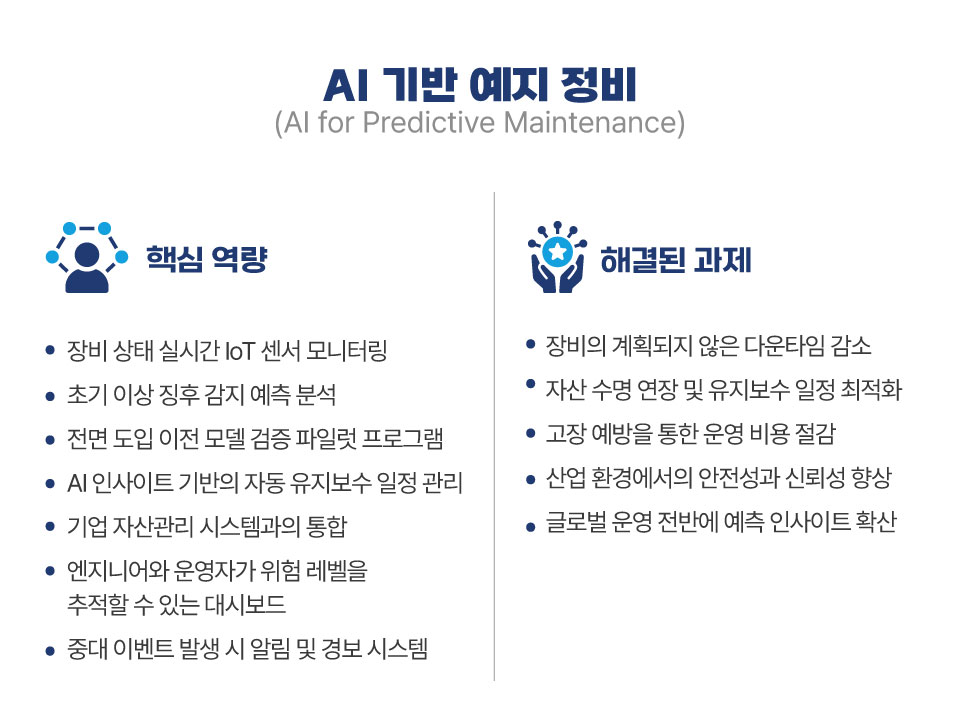

오늘날 에너지 산업은 인공지능(AI)과 재생에너지의 결합으로 100년
만에 찾아온 구조적 전환기를 맞이하고 있다. 이 변화는 단순한 기술
발전이 아니라 기존의 핵심 역량과 비즈니스 모델을 무력화시키는
‘역량 파괴적 혁신(competence-destroying innovation)’이자 산업 패러다임 자체를 바꾸는
‘와해성 혁신(disruptive innovation)’으로 나타나고 있다. 과거 화석연료와 대규모 중앙집중식 설비에
의존해 성공을 누리던 석유·전력 기업들은 이러한 변화에 적응하지
못하면 오히려 그동안의 핵심 역량을 상실한 채 무너질 수 있다.
실제로 2020년 미국의 재생에너지 기업 넥스트에라 에너지(NextEra
Energy)의 시가총액이 엑슨모빌을 추월하며 에너지 산업의 ‘권력
이동’을 상징하는 사건이 발생했다.1) 엑슨모빌은 92년
만에 다우존스 산업지수에서 퇴출되었고2), 석유·가스
기업의 S&P500 지수 내 비중은 2008년 15%에서 2020년 3% 미만으로
급락했다3). 이는 시장이 더 이상 ‘석유’가 아니라
‘전력·데이터·기후 기술’을 미래 성장동력으로 간주하기 시작했음을
보여주는 신호였다. 결국 AI와 재생에너지가 촉발한 혁신 앞에서
과거의 성공 공식에 안주한 기업들은 흔들리고, 데이터를 기반으로 한
새로운 역량을 갖춘 기업들이 부상하고 있는 것이다.
AI는 이 거대한 전환의 도구이자 촉매이며, 에너지 산업에서 새로운
생존의 언어로 자리매김하고 있다.

화석 에너지 섹터의 비중 하락 (출처: The Daily Shot)
20세기 에너지 산업은 거대한 규모의 자본·설비와 화석연료 중심으로
구축되어 왔다. 그러나
21세기에 들어 데이터·AI·분산형 에너지가 그 자리를 대체하고
있으며, 에너지 패권이 새로운 주체로 이동하고 있다.
독일의 E.ON과 RWE는 재생에너지 확산으로 전력 도매가격이 폭락하자
2016년 자사의 석탄·원전 부문을 과감히 분리하여 재생에너지·송배전
중심으로 재편했다. 이러한 ‘자기 분열적 구조조정’은 과거에 강점이던
자산과 역량이 더 이상 유효하지 않다는 것을 보여주며, 새로운
환경에서 기존 역량이 오히려 부담이 되는 역량 파괴적 혁신의 단면을
보여 준다. AI와 재생에너지의 부상은 기존 강자들의 핵심 역량을
약화시키고 산업 구조 자체를 뒤흔드는 방향으로 작용하고 있다.
기존 화석연료 기업과 전통적 유틸리티들이 직면한 위기는 곳곳에서
포착된다. 2020년 코로나19 팬데믹 이후 석유 메이저인 엑슨모빌과
셰브론은 역사상 최대 규모의 적자를 기록했고, 신규 유전 탐사 사업을
대폭 축소했다.4) 정유·시추 등 막대한 고정비에 기반한
사업 구조는 디지털화되고 탈탄소화되는 시장 환경에서 오히려 재무적
부담으로 작용하게 되었다. 전력 유틸리티 측면에서도, 태양광 보급
확대로 미국과 호주에서 전력 수요 곡선이 이른바 ‘덕 커브(Duck
Curve)’ 형태로 변형되면서 전통적인 요금 기반 비즈니스 모델이
붕괴하고 있다. 기후변화로 인한 리스크도 현실이 되어, 미국
캘리포니아의 대형 전력회사 PG&E는 산불 피해로 2019년 파산을
신청하며 기후 리스크가 곧 재무 리스크로 이어질 수 있음을
보여주었다.5) 이 모든 사례는 현재의 혁신이 과거의
역량을 강화하는 방향이 아니라 오히려 기존 역량을 파괴하는 혁신의
시대에 접어들었음을 의미한다.

한편, 재생에너지 자체의 기술적 한계로 여겨졌던 간헐성 문제는 AI에
의해 급속히 극복되고 있다. 과거에는 바람이나 태양에 의존하는
발전원이 불안정하다고 인식되었으나, AI 예측 알고리즘이 기상
데이터와 발전 실적을 분석하여 태양광·풍력 발전량의 변동을 정밀하게
예측해주고, 가상발전소(VPP) 기술은 수천 개에 이르는 분산된 태양광
패널, 배터리, 전기차를 하나의 거대한 발전소처럼 통합 제어할 수
있게 되었다.6) 또한 AI 기반 그리드 운영 시스템은
실시간으로 전력 수요와 공급을 자동으로 조정하여, 재생에너지
간헐성으로 인한 전력망 불안정을 최소화하고 있다.
국제에너지기구(IEA)의 특별 보고서에 따르면 이러한 AI 기반
예측·최적화 덕분에 신규 송전선 건설 없이도 175GW에 달하는 추가
송전 용량을 확보할 수 있다는 추정까지 나와 있다.7)
즉, AI의 활용으로 재생에너지의 불안정성이 상당 부분 해소되면서,
태양광·풍력이 기존 화력 발전 못지않은 신뢰성과 경제성을 갖추게
되었고 전력망 운영 효율은 비약적으로 높아졌다.
이 과정에서 구글, 테슬라와 같은 IT·기술 기업들이 전력 시장의
새로운 경쟁자로 떠오르고 있다는 점도 주목할 만하다. 구글
딥마인드(DeepMind)는 영국 전력망 운영사와 협력하여 AI 기반 전력
수요 예측 시스템을 개발했고, 아마존과 마이크로소프트 역시 자사의
AI·클라우드 플랫폼을 통해 에너지 데이터 서비스를 제공하기
시작했다.8)
AI는 이렇게 단순한 효율 개선 도구를 넘어, “데이터를 에너지로
바꾸는 기술”로서 작동하며 에너지 산업의 판도를 뒤바꾸고
있다.
결국 AI가 주도하는 와해성 혁신은 새로운 기술과 데이터 역량을 지닌
플레이어들에게 유리한 환경을 조성하는 한편, 구산업의 강자들에게는
그들의 강점을 무력화하는 양날의 검으로 작용하고 있다.

이 같은 환경 변화에 직면하여, 과거 에너지 산업을 지배했던 석유
및 전력 대기업들은 AI 경쟁에서 뒤처지지 않기 위해 사업
포트폴리오를 재편하고 대대적인 인력·자산 구조조정을 단행하고
있다.
탄소집약적 사업의 수익성이 저하되는 반면, AI와 디지털 역량이
새로운 핵심 경쟁력으로 부상하고 있기 때문에, 살아남기 위한 선제
대응에 나선 것이다. 프랑스의 EDF와 글로벌 에너지 관리 기업
슈나이더 일렉트릭은 원자력 발전 설비와 산업용 설비 운영에
디지털 트윈과 AI를 적용하여 운영 리스크를 낮추고 효율을
높이고
있으며, BP와 Shell과 같은 오일 메이저들도 전통적인 탐사·정유
중심의 활동을 넘어
AI를 활용한 신기술 연구와 운영 고도화에 힘쓰고 있다. Shell은 AI 도구를 활용해 1억 1천만 개 이상의
분자를 신속히 분석함으로써 차세대 배터리 전해질과 탄소포집용
신소재 후보를 67개나 발굴해 내는 등 첨단 소재 개발 속도를
혁신적으로 높이고 있고, BP는 클라우드 기반 AI로 파이프라인 부식
여부를 실시간 감시하고 최적의 유지보수 시점을 예측하는 기술을
도입하는 동시에 AI로 최적의 전기차 충전소 입지를 선정하는 등 운영
효율화와 신사업 준비에 박차를 가하고 있다.
미국의 대형 전력회사들도 발 빠르게 움직이고 있는데, 넥스트에라
에너지는
AI 드론과 열화상 기술을 풍력·태양광 발전단지 점검에 활용하여 폭풍 피해나 과열 부품을 신속히 발견해 전력공급 중단을
최소화했고, 증가하는 AI 데이터센터 전력 수요에 대응하기 위해
구글과의 계약을 통해 장기간 가동 중지되었던 원자력 발전소를
재가동하는 결단을 내리기도 했다. 영국의 내셔널 그리드(National
Grid)는
AI 스타트업에 1억 달러를 투자하고 외부 기술을 적극 도입하여
재생에너지 통합과 수요관리 역량을 높인 결과, 미국 매사추세츠 지역의 정전 시간을 30%나 감소시키는 성과를
거두었다. 내셔널 그리드의 CEO 존 페티그루(John Pettigrew)는
“유연한 전력망과 AI 없이는 전기화된 사회를 감당할 수 없다”고
강조하며, AI 기술 도입이 전력망 운영의 필수 요소가 되었음을
천명했다.9)

동시에, 전통 석유 기업들은 사업 철수와 조직 슬림화를 통해 불확실성에 대비하고 있다. 엑슨모빌이 대주주인 캐나다 임페리얼 오일(Imperial Oil)은 2025년 9월 자사의 경영지원 및 기술 기능을 글로벌 센터로 통합하는 대대적인 구조 개편을 발표했다.10) 이 계획의 목표는 AI와 디지털 기술을 활용해 자산 가치를 극대화하고 비용을 절감하는 데에 있으며, 이를 위해 2027년까지 전체 직원의 약 20%를 감축하여 연간 1억 5천만 달러의 비용을 절감하겠다는 것이다. 비록 구조조정 비용으로 3억 3천만 달러가 투입될 예정이지만, 임페리얼은 이를 통해 절감된 인력 비용을 AI 기술 투자와 디지털 인력 재배치에 집중하겠다는 전략을 내비쳤다. 엑슨모빌 자체도 2025년까지 글로벌 직원 2,000명(전체의 3~4%)을 감축하겠다고 발표했으며, 주로 유럽 지역의 사업부를 통폐합하여 비용 구조를 개선하려 하고 있다. 이는 최근의 시장 수요 불확실성과 유럽의 엄격한 기후 규제가 투자 재편을 압박하는 가운데, 대형 석유기업들이 에너지 전환과 AI 시대에 대비해 몸집을 줄이고 조직을 재편하고 있음을 보여준다.
한편, 일부 선도 기업들은 보다 근본적인 자기 혁신을 통해 새로운 환경에서 살아남고자 한다. 덴마크의 오스테드(ørsted)는 2017년 과감하게 석유·가스 사업을 전면 매각하고 해상풍력에 집중하는 재생에너지 기업으로 탈바꿈하여, 현재 전 세계 해상풍력 시장의 25%를 차지하고 시가총액 기준 유럽 1위의 에너지 기업으로 거듭났다. 프랑스의 토탈에너지스(TotalEnergies)는 2021년 사명을 바꾸고 석유 중심에서 전력·태양광·수소 등을 아우르는 종합 에너지 기업으로의 전환을 선언하면서 “더 이상 석유회사(Total)가 아니다”라는 강력한 메시지를 투자자들에게 전달했다. 영국의 BP 역시 2020년 전체 인력의 15%를 감축하며 전통적인 탐사·정유 조직을 해체했고, 당시 CEO인 버나드 루니는 “BP는 더 이상 석유기업이 아니라 종합 에너지 기업”이라고 선언함으로써 조직 정체성을 송두리째 재정의했다. 이처럼 스스로 자신의 기존 사업을 해체하고 재창조한 기업들은 새로운 질서 속에서 생존할 뿐만 아니라 업계 리더로 부활하고 있다.

주목해야 할 것은 이들의 공통된 성공 요인이 AI와 데이터 기술의 적극적 활용이었다는 점이다. Shell은 AI 기반 예지 정비(predictive maintenance)를 통해 설비 고장을 미리 예방함으로써 연간 35만 톤의 이산화탄소 배출을 절감하고 운영비용을 크게 낮추었으며11), EDF는 합성데이터(synthetic data)를 전력 수요 예측에 활용해 예측 정확도를 획기적으로 높였다. 스페인의 이베르드롤라(Iberdrola)와 이탈리아의 엔엘(Enel) 등도 AI를 기반으로 전력망 최적화와 에너지 저장 장치 운영 효율을 제고하여 스스로를 ‘디지털 유틸리티’로 탈바꿈시키고 있다. 결국 전통 기업의 희비는 ‘AI와 데이터 역량을 받아들이고 스스로 혁신할 수 있었는지’에 따라 갈리고 있다. 과거의 핵심 역량을 과감히 버리고 새로운 기술 중심으로 재편한 기업만이 살아남아 업계 주도권을 쥐고, 그렇지 못한 기업들은 도태되는 흐름이 뚜렷해지고 있는 것이다.

“스스로를 파괴하지 못하는 기업은 남에 의해 파괴된다”는 말처럼, AI와 재생에너지의 결합이 몰고 온 혁신은 단순한 효율 개선이 아니라 산업 패러다임의 교체이다. 일부 오일 메이저, RWE, PG&E처럼 과거의 성공 공식을 답습한 기업들은 급변하는 환경에 적응하지 못하고 쇠락의 길을 걷는 반면, ørsted, TotalEnergies, NextEra처럼 자신의 정체성을 근본부터 재설계한 기업들은 새로운 질서의 핵심 리더로 떠올랐다. AI는 이제 에너지 산업에서 단순한 도구를 넘어 생존을 좌우하는 언어이자 새로운 산업의 헌법이 되고 있다. 그렇다면 이러한 변화 속에서 한국의 에너지 기업들은 어떻게 대응해야 할 것인가? 석유화학, 발전공기업 등 한국의 기존 에너지 기업들 역시 이제는 효율 개선 차원을 넘어서 ‘우리의 존재 이유를 재정의’하는 수준의 전략적 전환을 모색해야 한다. 한국의 에너지 기업들은 이 거스를 수 없는 흐름을 위협이 아닌 기회로 인식해야 한다. 이제 데이터와 AI를 기반으로 한 예측·관리 시스템 구축, 디지털 트윈 도입 등을 속도감 있게 추진해야 할 때이다. 또한 AI 시대의 윤리와 보안 문제를 면밀히 관리하면서, AI 기술로 전력망의 유연성, 재생에너지 통합 능력, 산업 설비의 안전성을 향상시킨다면 탄소중립과 경쟁력이라는 두 마리 토끼를 모두 잡을 수 있을 것이다.